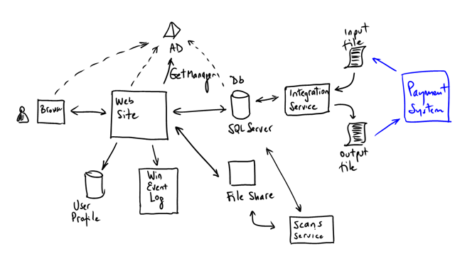
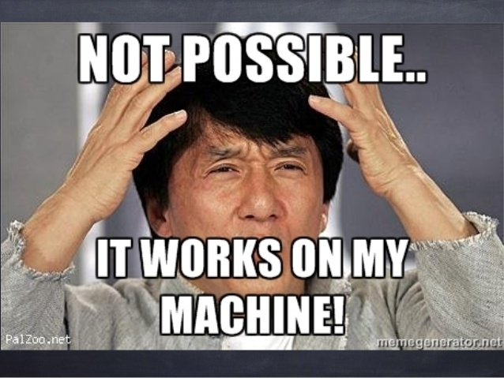

Taming Agile Architecture
Michael Haeuslmann @
"Individuals and interactions over processes and tools..."
- Agile Manifesto
Let's be agile, lets interact!
Agenda
Agile/Architecture Myths
Practicing Agile Architecture
Why do we even talk about this?
“The word 'agile' has been subverted to the point where it is effectively meaningless, and what passes for an agile community seems to be largely an arena for consultants and vendors to hawk services and products.”
- Dave Thomas
The Fine Art of Baloney Detection
"The Demon-Haunted World: Science as a Candle in the Dark" - Carl Sagan- there must be independent confirmation of "facts"
- arguments from authorities carry little weight
- try not to get overly attached to a hypothesis, just because it's yours
- ...
Agile!
The Good, the Hype and the Ugly
Bertrand Meyer
"One Hacker Way"
by Erik Meijer
Agile Manifesto
Individuals and interactions
over processes and tools
Working software
over comprehensive documentation
Customer collaboration
over contract negotiation
Responding to change
over following a plan
That is, while there is value in the items on
the right, we value the items on the left more.
Myth #1
Agile means no documentation
Myth #2
Agile means no architecture
Myth #3
Good coding practices lead to good architecture
Myth #4
Agile means everything is easy to change
(even architecture)
Myth #5
Scrum === Agile
Myth #6
We're agile because ...
- ... we're using Jira
- ... we're doing Standups
- ... we use microservices
- ... we're using DDD
Architecture
"Software architecture refers to the high level structures of a software system, the discipline of creating such structures, and the documentation of these structures."
- Wikipedia
Architecture
"[Architecture] is the stuff that's hard to change"
"Architecture is not all about diagrams; it's about promoting collaboration and communication of the critical parts of the system."
- Martin Fowler
Design Decisions
- as little as possible, as much as needed
- Monolith first!
- think big, act small
- KISS - Keep It Simple, Stupid
- YAGNIY - You ain't gonna need it (yet)
- Big Ball of Mud (Foote & Yoder): design your architecture so that things which change often are closer together
Whiteboard Architecture
Class-Responsibility-Collaboration Cards (CRC)
Class
Responsibility
Collaboration
Big Architectural Decisions
"Beware of people who love to think about abstractions more than coding software."
- Steve Green
⇒ you ain't gonna need it yet (YAGNI)
Microservices
"Beware of the distributed monolith connected via a database" @lornajane #CraftConf meetup pic.twitter.com/SvsxykXiQY
— Daniel Bryant (@danielbryantuk) April 26, 2017
Continuous Integration
- fail fast
- learn rapidly
Everyday Architecture
- sprint 0, -1, ... for big projects
- architecture backlog items
- code reviews also from a 30.000 foot view
- retrospectices, ...
- in small/medium projects, everyone is the architect
"An architect's value is inversely proportional to the number of decisions she/he makes."
- Martin Fowler
Bring your Architecture and Documentation back to life
Validate your Documentation
Validate your Architecture
with

<?php
$cmd = shell_exec('dephpend text src --no-classes');
$constraints = [
'Model.* --> .*View',
'View.* --> .*Model',
];
$regex = '/('.implode(')|(', $constraints).')/x';
if (preg_match($regex, $cmd)) {
echo 'Architecture violation'.PHP_EOL;
exit(1);
}
ArchUnit
@ArchTest
public static final ArchRule layers_are_respected = layeredArchitecture()
.layer("Root").definedBy("com.tngtech.archunit")
.layer("Base").definedBy("com.tngtech.archunit.base..")
.layer("Core").definedBy("com.tngtech.archunit.core..")
.layer("Lang").definedBy("com.tngtech.archunit.lang..")
.layer("Library").definedBy("com.tngtech.archunit.library..")
.layer("JUnit").definedBy("com.tngtech.archunit.junit..")
.whereLayer("JUnit").mayNotBeAccessedByAnyLayer()
.whereLayer("Library").mayOnlyBeAccessedByLayers("JUnit")
.whereLayer("Lang").mayOnlyBeAccessedByLayers("Library", "JUnit")
.whereLayer("Core").mayOnlyBeAccessedByLayers("Lang", "Library", "JUnit")
.whereLayer("Base").mayOnlyBeAccessedByLayers("Root", "Core", "Lang", "Library", "JUnit");Summary
- Use your baloney detection kit
- be wary of agile "processes"
- let's all be architects
- fail fast and learn rapidly
- live architecture
- validate your architecture decisions
- revive your documentation
Questions?
Michael Haeuslmann
@michaelhaeu
https://github.com/mihaeu
Feedback?
Books
- Clean Architecture by Robert C. Martin
- Agile! - The Good, the Hype and the Ugly by Bertrand Meyer
- The Pragmatic Programmer by Andrew Hunt, David Thomas
- Extreme Programming Explained by Kent Beck, Cynthia Andres
- ...
Sources
http://www.denofgeek.us/sites/denofgeekus/files/6/25/frankenstein-1931.jpg
https://www.slideshare.net/gahlawatanju21/agile-reluctancy-in-india-anju-gahlawat
http://www.bradvg.com/blog/the-problem-with-good-intentions/
KurtKamka https://www.getdpi.com/forum/leica/21559-s-show-us-your-s2-shots-22.html
https://tisquirrel.me/2016/01/03/say-agile-one-more-time/
http://www.br.de/themen/wissen/inhalt/umwelt/wueste-wuestentiere104.html
https://blogs.msdn.microsoft.com/eugeniop/2010/05/24/windows-azure-architecture-guide-part-1-release-candidate-documents-updated/
http://eduart4kids.com/painting-for-kids/
https://image.slidesharecdn.com/quangnguyencontinuousintegrationxpday2015danangquangnguyen-150520014341-lva1-app6892/95/quang-nguyen-continuous-integration-xp-day-2015-vietnam-danang-3-638.jpg?cb=1432086426
https://blogs.msdn.microsoft.com/willy-peter_schaub/2010/11/22/are-the-rangers-courageous-or-crazy-to-brainstorm-and-adapt-methodologies-from-clever-people-as-part-of-ruck/